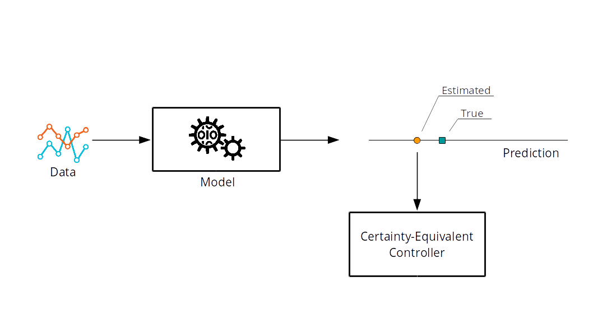
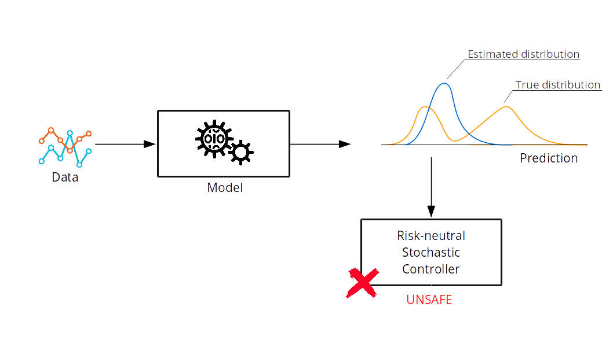
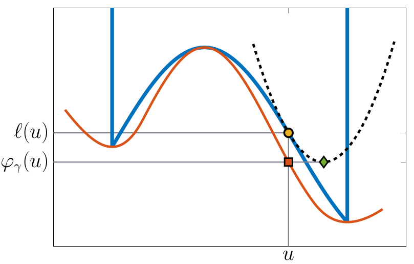
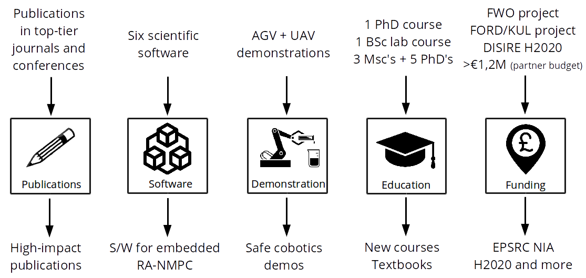
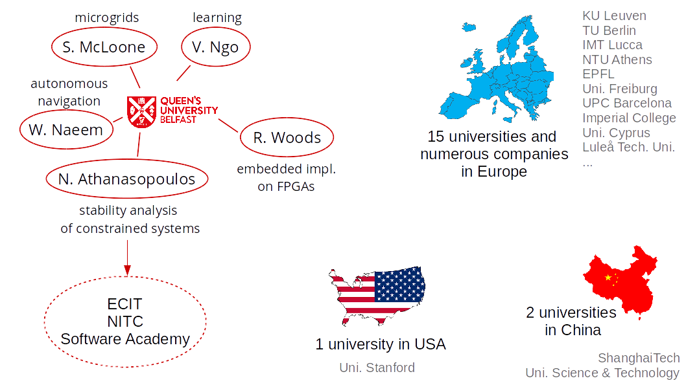

Optimisation, Control and Learning Ensembles
for Safe Intelligent Cobots
Queen's University Belfast
About me
Education
|
Six years postdoc experience
|
Research: Stochastic model predictive control
and fast numerical optimisation
for autonomous systems
Challenges & Objectives
Safe Intelligent Cobots
Challenges

Objectives
Overview
Learning-based Control
Risk-averse Model Predictive Control
Safe Learning-based Control
Model Predictive Control
J.B. Rawlings, D.Q. Mayne & M. Diehl,
Model Predictive Control: Theory, Computation, and Design,
Nob Hill Pub., 2009.
Certainty-Equivalent Control

J.B. Rawlings, D.Q. Mayne & M. Diehl,
Model Predictive Control: Theory, Computation, and Design,
Nob Hill Pub., 2009.
J.B. Rawlings, D.Q. Mayne & M. Diehl,
Model Predictive Control: Theory, Computation, and Design,
Nob Hill Pub., 2009.
Worst-case Control

J.B. Rawlings, D.Q. Mayne & M. Diehl,
Model Predictive Control: Theory, Computation, and Design,
Nob Hill Pub., 2009.
Worst-case MPC:
$$
\operatorname*{Minimise}_{u_0,\ldots,u_{N-1}} \operatorname*{max}_{(w_0,\ldots, w_{N-1})\in W} \left[
\ell_N(x_N) +
\sum_{t=0}^{N-1} \ell_t(x_t,
u_t, w_t)\right]
$$
subject to system dynamics, $x_{t+1}=f(x_t, u_t, w_t)$, and constraints.
J.B. Rawlings, D.Q. Mayne & M. Diehl,
Model Predictive Control: Theory, Computation, and Design,
Nob Hill Pub., 2009.

J.B. Rawlings, D.Q. Mayne & M. Diehl,
Model Predictive Control: Theory, Computation, and Design,
Nob Hill Pub., 2009.
Stochastic Control

A. Mesbah, "Stochastic model predictive control: An overview and perspectives for future research,"
IEEE CSM, 2016.
Stochastic MPC:
$$
\operatorname*{Minimise}_{u_0,\ldots,u_{N-1}} \mathbb{E}_{w_0,\ldots, w_{N-1}} \left[
\ell_N(x_N) +
\sum_{t=0}^{N-1} \ell_t(x_t,
u_t, w_t)\right]
$$
subject to the system dynamics and constraints.
A. Mesbah, "Stochastic model predictive control: An overview and perspectives for future research,"
IEEE CSM, 2016.

A. Mesbah, "Stochastic model predictive control: An overview and perspectives for future research,"
IEEE CSM, 2016.
A. Mesbah, "Stochastic model predictive control: An overview and perspectives for future research,"
IEEE CSM, 2016.
Uncertainty in uncertainty
P. Sopasakis, M. Schuurmans and P. Patrinos, "Safe learning-based risk-averse MPC," IEEE Conf. Decision and
Control, Nice, 2019.
Measuring Risk
P. Sopasakis, D. Herceg, A. Bemporad and P. Patrinos,
"Risk-averse model predictive control,"
Automatica 100, pp. 281-288, Feb. 2019.
Measuring Risk
A risk measure maps a random cost, $Z$, to a value, $\rho(Z)$,
with
$$
\mathbb{E}[Z] {}\leq{} \rho(Z) {}\leq{} \max[Z]
$$
Well-behaving (coherent) risk measures:
$$
\rho(Z) {}={} \max_{\mu\in\mathcal{A}}\mathbb{E}_\mu[Z]
$$
where $\mathcal{A}$ (closed and convex) is called the ambiguity set
of $\rho$.
Trivial risk measures
Let $\Omega$ be a finite sample space, $\Omega = \{\omega_1,\ldots, \omega_K\}$,
which is equipped with a probability vector $p \in \mathbb{R}^K$ (suppose $p_i>0$).
The expectation and the maximum are
coherent risk measures.
The ambiguity set of the exectation is the singleton $\{p\}$ and the
ambiguity set of the maximum is the probability simplex,
$$D_K = \{\mu \in \mathbb{R}^K {}:{} \sum_i \mu_i = 1, 0 \leq \mu_i\}$$
Average value-at-risk
A popular risk measure is the average value-at-risk with parameter
$\alpha\in(0,1]$
given by
$$
\mathrm{AV@R}_{\alpha}[Z] = \inf_{t\in\mathbb{R}} t + \tfrac{1}{\alpha}\mathbb{E}\max\{0, Z-t\}
$$
The ambiguity set of $\mathrm{AV@R}_{\alpha}$ is the set
$$
\mathcal{A}_\alpha = \{\mu \in D_K {}:{} \mu_i \leq
\tfrac{1}{\alpha}p_i \}
$$
P. Sopasakis, D. Herceg, A. Bemporad and P. Patrinos,
"Risk-averse model predictive control,"
Automatica 100, pp. 281-288, Feb. 2019.
Risk-averse MPC
First attempt:
$$
\operatorname*{Minimise}_{u_0,\ldots, u_{N-1}}\rho_{w_0,\ldots, w_{N-1}}
\bigg[
\ell_N(x_N) {}+{} \sum_{t=0}^{N-1} \ell_t(x_t,u_t, w_t)
\bigg]
$$
subject to the system dynamics and constraints.
However,
- $\rho_{w_0,\ldots, w_{N-1}}$ does not measure how the uncertainty propagates
- Dynamic programming does not apply
- We cannot derive stability conditions
P. Sopasakis, D. Herceg, A. Bemporad and P. Patrinos,
"Risk-averse model predictive control,"
Automatica 100, pp. 281-288, Feb. 2019.
Risk-averse MPC
|
|
Proper multistage formulation:
$$
\begin{align}
\operatorname*{Minimise}_{u_0,\ldots, u_{N-1}}\ &\rho_{w_0}
\Big[
\ell_0(x_0,u_0, w_0)\\
&{}+{}
\rho_{w_1\mid w_0}\left[\ell_1(x_1,u_1, w_1) {}+{} \ldots{} \right]
\Big]
\end{align}
$$
subject to the system dynamics and constraints.
|
P. Sopasakis, D. Herceg, A. Bemporad and P. Patrinos,
"Risk-averse model predictive control,"
Automatica 100, pp. 281-288, Feb. 2019.
Risk-averse MPC: Consequences
A novel safe control framework which
becomes increasingly less conservative as more data become available.
It allows to create an unexplored synergy
of control and learning!
P. Sopasakis, M. Schuurmans and P. Patrinos,
"Safe learning-based risk-averse MPC for Markovian systems,"
IEEE CDC, 2019 (TBS).
Numerical Optimisation
Collision Avoidance
E. Small, P. Sopasakis, et al., "Aerial navigation in obstructed environments
with embedded nonlinear model predictive control," IEEE ECC, 2019.
Collision avoidance
The dynamics is always nonlinear
The constraints are always nonconvex:
Nonconvex Optimisation Problems: $\operatorname*{Minimise}_{u\in U} f(u)$
A.S. Sathya, P Sopasakis, et al.
et al., "Embedded nonlinear model predictive control for obstacle avoidance using
PANOC,"
IEEE ECC, 2018.
Embedded Nonconvex Optimisation
SQP and IP involve complex steps (QP solution, linear
systems)
They are not suitable for embedded applications
Projected gradient (PG) is simple,
$u^{\nu+1} = $ $T_\gamma(u^\nu)$ $:= \Pi_{U}(u^\nu - \gamma \nabla
f(u^\nu))$
but very slow!
L. Stella, A. Themelis, P. Sopasakis and P. Patrinos,
et al., "A simple and efficient algorithm for nonlinear model predictive
control," IEEE CDC, 2017.
A.S Sathya, P Sopasakis, et al. et al., "Embedded nonlinear model predictive control for obstacle avoidance using PANOC," IEEE ECC, 2018.
A.S Sathya, P Sopasakis, et al. et al., "Embedded nonlinear model predictive control for obstacle avoidance using PANOC," IEEE ECC, 2018.
Embedded Nonconvex Optimisation
IDEA #1. An averaged algorithm that takes convex combinations of
safe (PG)
and fast (Quasi-Newtonian) steps!
$u^{\nu+1} = u^{\nu} + \tau_\nu$
$d_{\mathrm{LBFGS}}^{\nu}$
${}+{} (1-\tau_\nu)[$$T_\gamma(u^\nu) - u^\nu$$]$
|

|
IDEA #2. A globalisation of the above
algorithm using a real-valued continuous merit function - the forward-backward envelope.
|
L. Stella, A. Themelis, P. Sopasakis and P. Patrinos,
et al., "A simple and efficient algorithm for nonlinear model predictive
control," IEEE CDC, 2017.
A.S Sathya, P Sopasakis, et al., "Embedded nonlinear model predictive control for obstacle avoidance using PANOC," IEEE ECC, 2018.
A.S Sathya, P Sopasakis, et al., "Embedded nonlinear model predictive control for obstacle avoidance using PANOC," IEEE ECC, 2018.
Two Orders of Magnitude Faster!
A.S. Sathya, P Sopasakis, et al.
et al., "Embedded nonlinear model predictive control for obstacle avoidance using
PANOC,"
IEEE ECC, 2018.
Large-scale GPU-accelerated optimisation
P. Sopasakis, A.K. Sampathirao, A. Bemporad and P. Patrinos,
"Uncertainty-aware demand management of
water distribution networks in deregulated energy markets," Environmental Modelling & Software, 2018.
A.K. Sampathirao, P. Sopasakis, A. Bemporad and P. Patrinos, "GPU-accelerated stochastic predictive control
of drinking water networks," IEEE Control Systems Technology 26(2):551–562, 2018.
A.K. Sampathirao, P. Sopasakis, A. Bemporad and P. Patrinos, "Distributed solution of stochastic optimal
control problems on GPUs," 54 th IEEE Conf. Decision and Control, Dec 2015, Osaka, Japan.
My Research Vision
Safe Intelligent Cobotics
Educational value

Elegant OCL framework
$\Downarrow$
Textbooks for engineers and computer scientists on
embedded and distributed optimisation and
learning-based control for safe cobotics
Research Team
Funding agencies...


|

Two PhD students
+

One postdoc
|
Research Agenda
Collaborations

Thank you for your attention